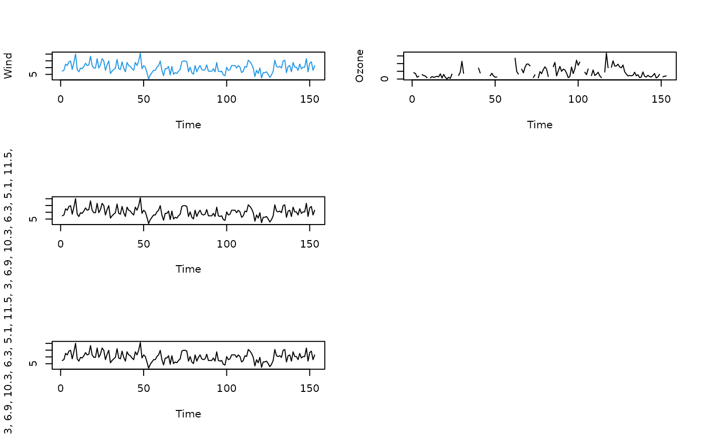

UpdateGraph.RdEither grabs the specified label or sets it to a newly specified value. In this case the graph is re-drawn and the graph object is updated.
UpdateGraph(object, ...)
Main(graph, label = NULL)
XLab(graph, label = NULL)
YLab(graph, label = NULL)The graph object to be updated.
the text to be used in place of the current text label. Use of the default NULL leads to the extraction of the current value and no updating is done.
the set of parameters to be altered.
Specify the label to be an empty text string if the desire is to delete the current label.
The graph object will be updated in the global environment if a new value is assigned.
attach(airquality)
op = par(mfcol=c(3,2))
test1 = TimeSeriesPlot(x=Wind, col=4, base=TRUE)
#> Warning: "base" is not a graphical parameter
#> Warning: "base" is not a graphical parameter
#> Warning: "base" is not a graphical parameter
#> Warning: "base" is not a graphical parameter
#> Warning: "base" is not a graphical parameter
XLab(test1, "Day")
# check the change is permanent by doing another change
test1
test2 = TimeSeriesPlot(x=Ozone, base=TRUE)
#> Warning: "base" is not a graphical parameter
#> Warning: "base" is not a graphical parameter
#> Warning: "base" is not a graphical parameter
#> Warning: "base" is not a graphical parameter
#> Warning: "base" is not a graphical parameter
# using the update method
update(test2, main="important title", sub="subtitles aren't always present", ylab="Ozone (ppb)")
# finally, change the graph to use different plotting characters/line types
update(test2) # to fix
par(op)

detach(airquality)